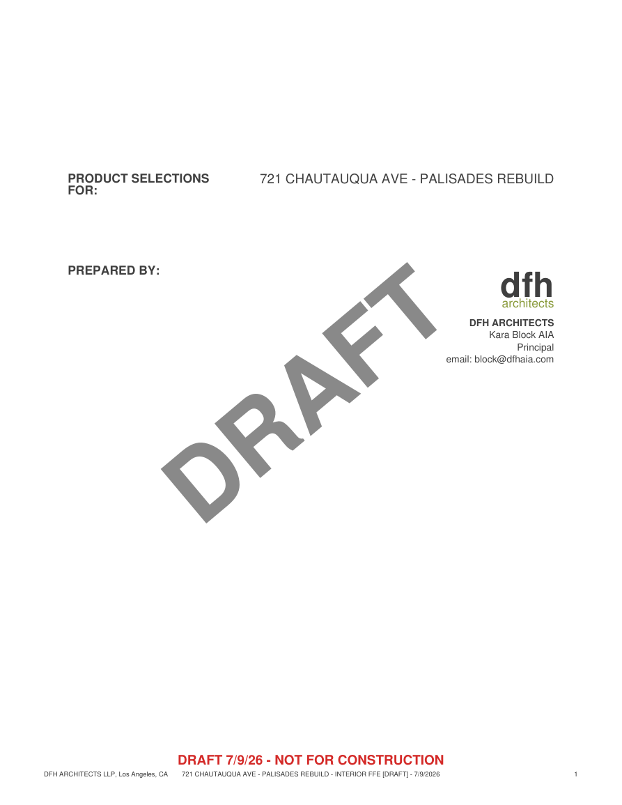
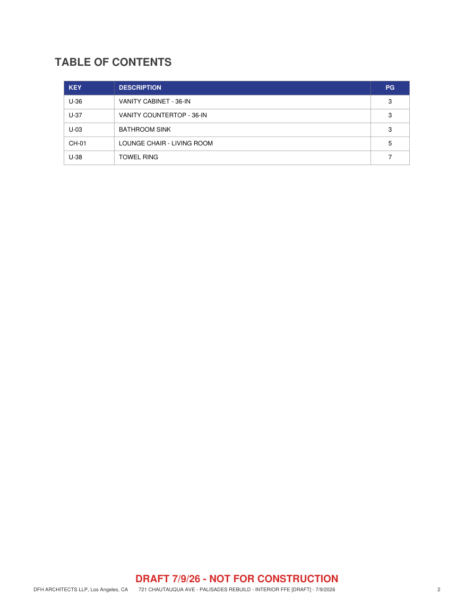
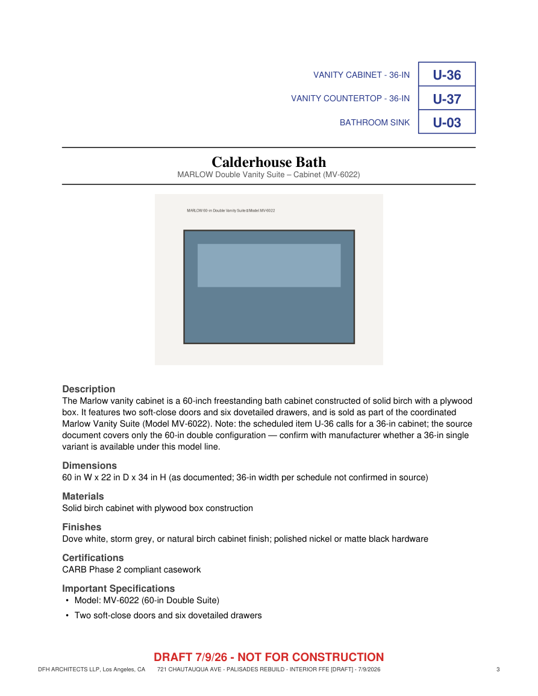
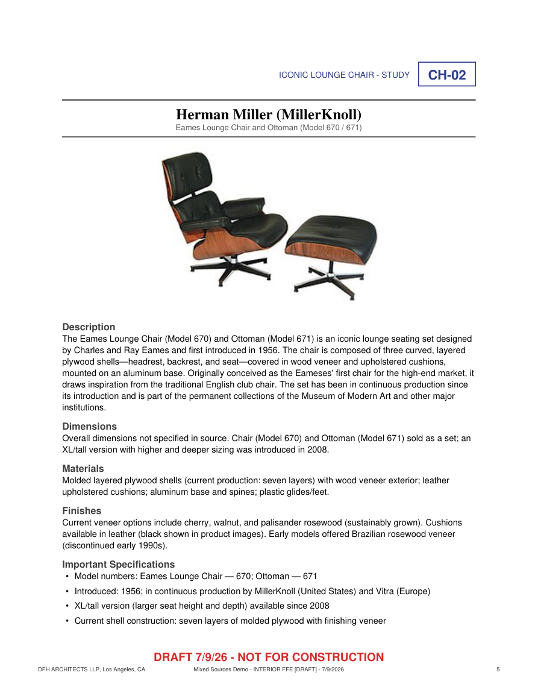
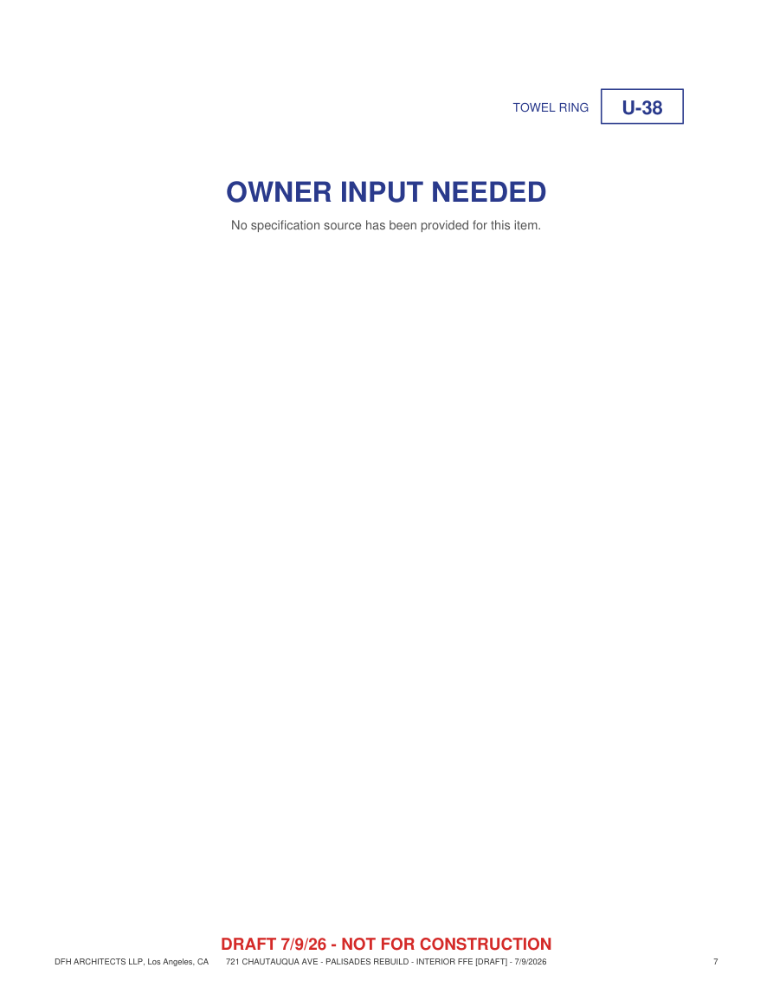
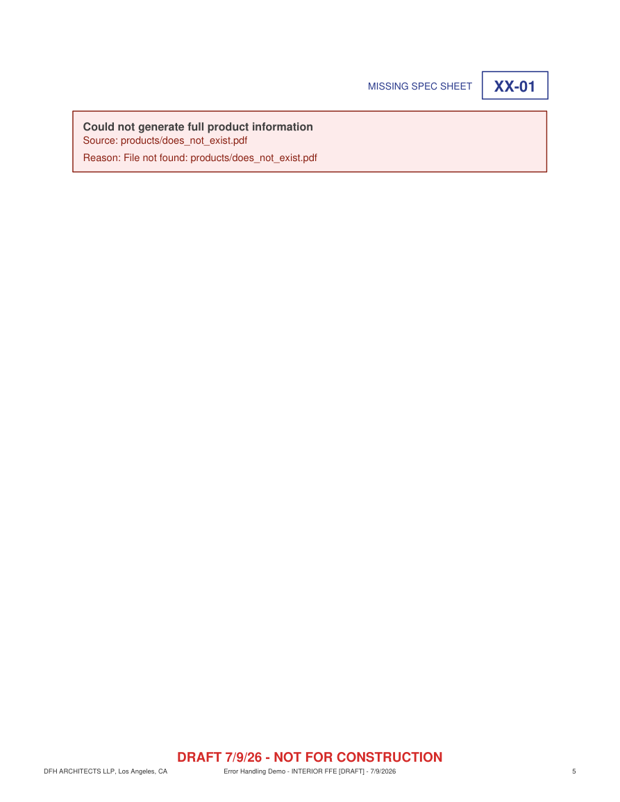
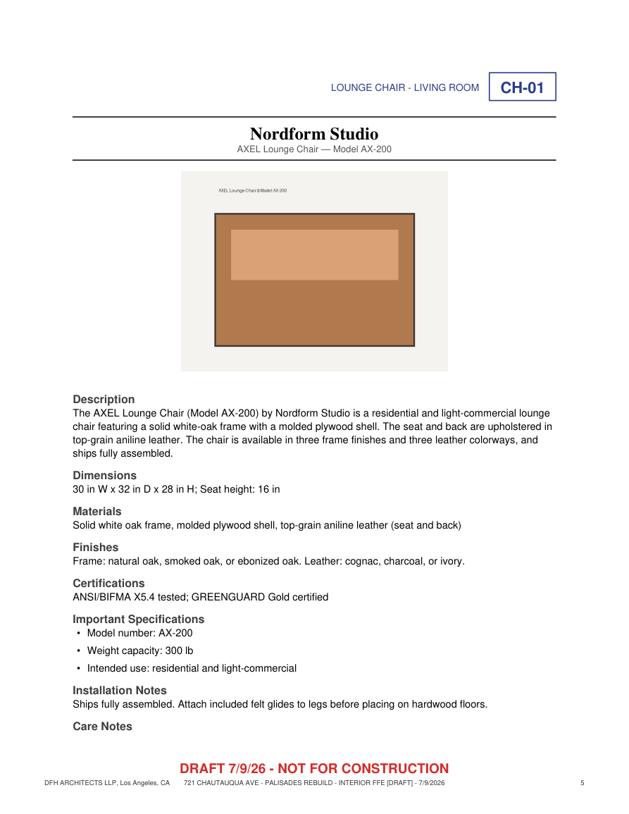

A Python application built on the Anthropic Claude API that reads a project's product schedule and its spec sheets, then writes a formatted product selections binder in the firm's own template.
Interior architects assemble product selections binders: client-facing PDFs that collect every specified product in a project — vanities, fixtures, tile, furniture — with a page of curated details per product. Building one by hand means opening every manufacturer cut-sheet PDF and product webpage, retyping dimensions, materials, finishes, and care notes into a layout, and keeping a table of contents in sync. It is slow, repetitive work.
This tool automates the whole pipeline. It takes the schedule an architect already has — an Excel export with KEY · DESCRIPTION · PATH columns pointing at each product's spec sheet or webpage — and produces a finished binder. The intelligence in the middle is Claude, called through the Anthropic API: raw text and images scraped from each source are sent to the model, which returns clean, structured product data. The output reproduces a real DFH Architects deliverable for a Pacific Palisades rebuild — down to the cover (firm logo, diagonal DRAFT watermark), the red "NOT FOR CONSTRUCTION" draft footer on every page, the navy KEY code badges paired with their schedule descriptions, the firm's convention of grouping several keys onto one page, and OWNER INPUT NEEDED placeholder pages for scheduled items that don't have a source yet.
The extraction schema is declared as a tool and the model is compelled to call it, so every response is valid, schema-conforming JSON — no "return JSON only" prompt, no markdown fences, no parsing failures.
The long domain system prompt is identical for every product, so it carries a cache breakpoint. The first product writes the cache; every product after reads it at ~10% of the cost — measured in §04.
Product photos and dimensioned drawings extracted from each source are downscaled, encoded, and sent as image blocks alongside the text, grounding the extraction in what the product actually looks like.
Schedule rows are grouped by shared source; each unique source is extracted, structured by Claude, then rendered into the binder. Two front-ends (CLI and notebook) feed the same pipeline.
| Module | Responsibility |
|---|---|
excel_reader.py | Reads the schedule with case-insensitive header matching; groups rows sharing one PATH; sends keys with no PATH to owner-input pages; also writes schedules created in the notebook. |
extraction/ | pdf_extractor (PyMuPDF text + embedded images, icon filtering), web_extractor (requests + BeautifulSoup heuristics for product photos), source_router (dispatch + relative-path resolution). |
ai_client.py | Anthropic API wrapper: domain system prompt, forced tool-use JSON schema, prompt caching, multimodal image blocks, layered error handling. |
pdf_builder.py | ReportLab renderer in the DFH template: cover (logo + DRAFT watermark), two-pass TOC, product pages with navy KEY badges, draft footer, error and owner-input pages. |
pipeline.py | Shared end-to-end pipeline used by both front-ends; unique output naming <project>__<company>__<timestamp>. |
main.py / binder_builder.ipynb | Two front-ends: a CLI for batch runs, and a point-and-click notebook form (ipywidgets + native file picker) for non-technical users. |
Rather than hoping for clean JSON in free text, the extraction schema is a tool and tool_choice forces the model to call it. The result is read straight from tool_use.input as a Python dict — no regex, no JSON repair.
Forcing structured output through the tool-use API eliminates an entire class of parsing failures that plague "return JSON only" prompts. Combined with prompt caching on the static system prompt and multimodal image blocks, the integration is production-shaped rather than a minimal single call.
The tool ships with committed example schedules, each stressing a different kind of input. Every transcript below is unedited terminal output from a live API run.
✔ Three vanity keys share one page and one API call; the sourceless U-38 becomes an owner-input page (Fig. 06).
✔ Correct extraction from ~10,000 characters of noisy page text; a rate-limited image degraded gracefully.
✔ The run completes, exit code 0; failed keys render as red error blocks in the binder (Fig. 07).
✔ Caught as a per-product error — the binder still builds, with the reason documented on the page.
Captured from the saved ai_interaction.json. The model respected the "do not invent" rule — every field traces to the source — and used the schedule keys to select the cabinet as the page's primary subject while cross-referencing its sibling keys.
Two consecutive extraction calls on a cold cache, read from response.usage. Once warm, every later call in the 5-minute window reads from cache — the saved ai_interaction.json independently confirms it.
| input tokens | cache creation | cache read | |
|---|---|---|---|
| Call 1 — first product | 668 | 1048 (cache written) | 0 |
| Call 2 — second product | 710 | 0 | 1048 (cache hit) |
Every product after the first reads the 1,048-token system prompt from cache — billed at ~10% of the normal rate — so the per-product cost of the domain prompt drops ~90% across a real binder of 30–50 products.
Every image below is a page from a binder generated by the tool, matched to the firm's real deliverable: the cover carries the dfh logo and a diagonal DRAFT watermark, and every page has the red "NOT FOR CONSTRUCTION" draft footer with the firm line, project, and page number.

Cover — "PRODUCT SELECTIONS FOR", the dfh logo + firm block under "PREPARED BY", and the diagonal DRAFT watermark.

Auto-generated KEY · DESCRIPTION · PG TOC. Grouped keys U-36/U-37/U-03 all resolve to page 3.

Grouped page: navy KEY badges with descriptions top-right, serif brand heading, extracted image, AI-structured fields.

Page built from a live webpage source — the product photo was downloaded and filtered by the image heuristics.

A scheduled key with no source (U-38 Towel Ring) renders as an OWNER INPUT NEEDED page — matching the firm's template.

A source that couldn't be read is documented inside the binder as a red error block; the run is unaffected.

Single-key page from a PDF cut sheet — image placed before text so both share the page, under the same navy badge + draft footer.
Because the intended users are designers, not developers, the tool also ships a Jupyter notebook (binder_builder.ipynb): a form with a native file picker, an Add-row button building a live product table, and a Generate button that writes both the schedule and the binder with unique, collision-free names such as Palisades_Rebuild__DFH_Architects__20260703_212952.pdf. Both front-ends call the same pipeline.
Forcing output through the tool-use API removed an entire class of JSON-parsing failures. The schema, not a politely-worded instruction, is what guarantees a usable result every time.
A verbose, careful system prompt would normally be a per-call cost liability. Prompt caching turned it into a one-time expense — the measured 90% drop makes a rich domain prompt essentially free at binder scale.
Treating every product as an isolated failure domain meant dead links, locked files, rate-limited image hosts, and even a revoked API key all degrade into a documented error block rather than a crashed batch.
The AI is one box in the diagram. The work that made this usable was everything around it — reproducing the firm's cover, footer, and owner-input template so the output drops straight into practice.